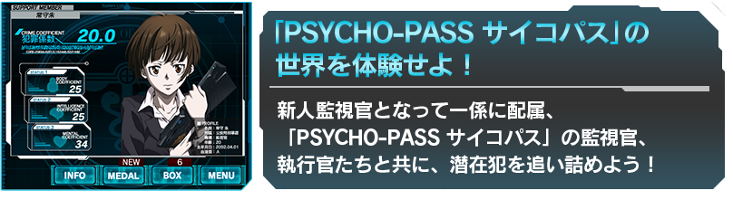
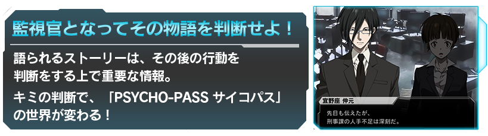
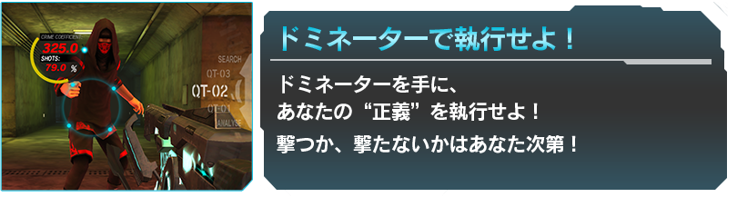
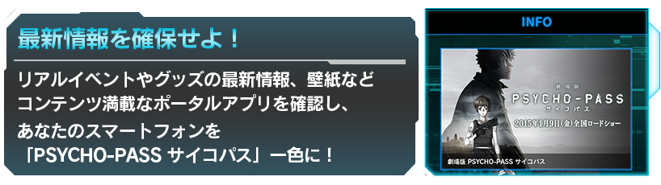

-
2015.4.16
メンテナンスのお知らせ
下記時間帯におきましてメンテナンスを実施いたします。
【日時】
4/17(金)15:00～16:00
【更新内容】
・サーバー保守
※データ保護の為、メンテナンス開始時刻前にはアクセスしないようお願いいたします。
※メンテナンス時間などは、状況により変更を行う場合があります。
皆様のご理解とご協力を、よろしくお願い申し上げます。 -
2015.4.7
メンテナンス終了のお知らせ
4/7(火)15:45をもってメンテナンスを終了しました。以下の更新を行いました。
【更新内容】
・『あなたが組みたい3人チーム投票』更新
※上位25チーム以下が投票不可となりました。以降は上位25チームの中からご投票ください。 -
2015.3.31
メンテナンス終了のお知らせ
18:00をもちましてメンテナンスを終了いたしました。以下の実装を行いました。
【ver.2.0.2公開】
・近接戦闘のUIを変更しました
・全体のバランス調整を行いました
・全体的なローディング時間を改善しました
・その他細かい不具合を修正しました
【イベント】
・『鎮圧執行報告会』開始
・『あなたが組みたい３人チーム投票』開始
-
お問い合わせ先
アプリに関するお問い合わせ先はこちら
-
2015.3.20
公式twitter Follower4000記念
twitterのFollowerが4000を突破しました。これを記念しまして、[フォトフィルム5個]を3/20(金)pm6:00より順次BOXへお贈りさせていただきます。次回は5000突破時を予定しております。この機会に公式twitterアカウント『@Psycho_Pass_SP』のフォローをよろしくお願いいたします。
【配布対象】2015/3/20(金)pm6:00時点に作成済みの全てのアカウント
【配布時間】2015/3/20(金)pm6:00より順次配布
-
2015.3.15
Androidユーザーの皆様へ重大なお知らせ
Androidユーザーの皆様へ
アップデートしましたバージョンにおきまして、ユーザーデータを正常に引き継げない不具合が発生いたしました。
本不具合の補填といたしまして、2015年3月31日までにAndroidによる新規登録をおこなったユーザー様には、PORTALモードで使用できるポイントを1250pt付与させていただきます。
また、旧バージョン(1.0.10以前)のイベントデータの復旧をご希望のユーザー様に関しましては、後日、別途お問い合わせフォームを用意し、個別に復旧対応いたします。
ご不便をおかけいたしますが、新バージョン(2.0.1以降)にて新規登録していただいた後、お楽しみください。
-
2015.3.15
「PSYCHO-PASS サイコパス」公式アプリ アップデート！
3/15 サイコの日に晴れてゲームモードが追加されたバージョン2.0.1がアップデートされました。
引き続きご愛顧のほどよろしくお願い致します。 -
2015.3.15
「あなたが相棒にしたいキャラ投票」結果発表
3/15はサイコの日！「あなたが相棒にしたいキャラ投票」集計が完了いたしました！
衝撃の結末は公式アプリよりご確認ください。あなたの相棒は誰ですか？
Who is your partner ? -
2015.3.14
大規模メンテナンスのお知らせ
18:00 - 24:00 の間アプリアップデートを伴うメンテナンスを実施いたします
※終了時刻は予告なく前後する場合がございます -
2015.3.13
「PSYCHO-PASS サイコパス 公式アプリ」
Twitter・315RTキャンペーン第３弾達成・執行対象です・ポイント付与モードに移行します・対象の全ユーザーに315ポイント付与を執行しました
-
2015.3.13
「PSYCHO-PASS サイコパス 公式アプリ」
Twitterフォロワー・オーバー3150キャンペーン・執行対象です・ポイント付与モードに移行します・対象の全ユーザーに315ポイント付与を執行しました
-
2015.3.12
「PSYCHO-PASS サイコパス 公式アプリ」PV動画公開
動画はこちらから
-
2015.3.12
「PSYCHO-PASS サイコパス 公式アプリ」
Twitter・315RTキャンペーン第２弾達成・執行対象です・ポイント付与モードに移行します・対象の全ユーザーに315ポイント付与を執行しました
-
2015.3.11
「PSYCHO-PASS サイコパス 公式アプリ」
Twitter・315RTキャンペーン達成・執行対象です・ポイント付与モードに移行します・対象の全ユーザーに315ポイント付与を執行しました
-
2015.3.9
「PSYCHO-PASS サイコパス 公式アプリ」
Twitterフォロワー数・オーバー1000・執行対象です・ポイント付与モードに移行します・対象の全ユーザーに100ポイント付与を執行しました
-
2015.3.9
公式アプリ内にて「あなたが相棒にしたいキャラ投票」イベントを開催中!!
3/13 23:59まで投票受付中!!
-
2015.01.09
『劇場版 PSYCHO-PASS サイコパス』本日公開！
上映劇場情報はこちらから
-
2014.12.26
公式アプリ連動「サイコパスる大捜査線」捜査開始！
サイコパスる大捜査線
「劇場版 PSYCHO-PASS サイコパス」の公開直前に、とんでもない事件が多発─!? 各事件を捜査・報告して、公安局からの褒章を入手せよ！

-

-

-

-
